数据之眼
都市异能 · 黑客 · 创业
第一章：觉醒
▎ 凌晨三点十七分 · 深圳科技园
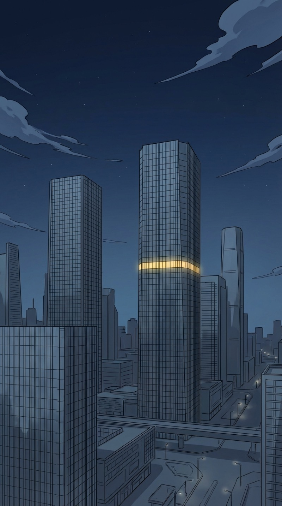
凌晨三点十七分。整栋楼只有我们这一层还亮着。隔壁老赵打呼的声音比服务器风扇还响。
第47次优化这个推荐算法了。每次都觉得"这次一定行"，结果accuracy还是卡在82%不动。做AI创业最崩溃的不是没钱，是你知道答案就在那里，但就是够不着。
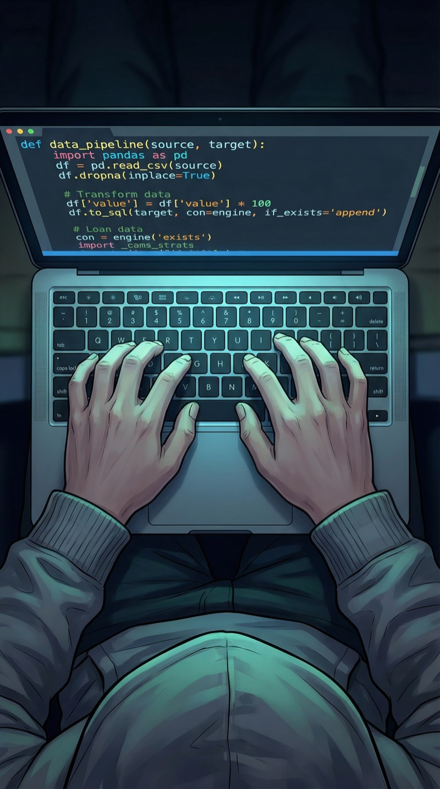
说来也怪，每次写到凌晨三点之后，脑子反而特别清醒。我管这叫"程序员的灵魂时间"——这个点，全世界的PM都睡了，终于没人改需求了。
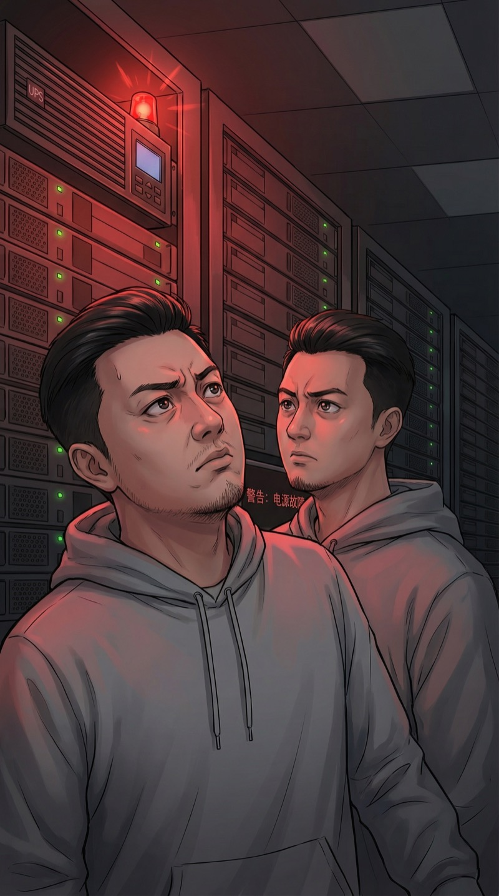
嗡——一种不正常的低频共振。做了八年服务器运维的直觉告诉我，这个声音不对。非常不对。
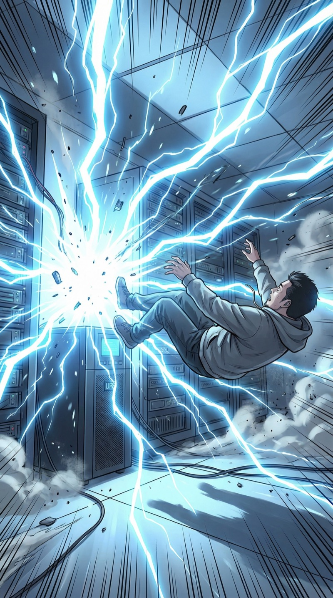
后来老赵跟我说，那一瞬间整栋楼都停了电。
而我唯一的想法是——操，代码没保存。
▎ 三天后 · 医院
三天后我才醒过来。第一眼看到的是老赵那张圆脸，以及他格子衫上的泡面汤渍。
第二眼，我看到了不该看到的东西。
老赵口袋里的手机——我能看见里面的东西。不是透视，更像是……数据变成了有形状的光。微信上他给投资人发了18条消息，每一条我都看得清清楚楚。
最后一条是："老朱会没事的，项目还在，别撤资。"
⚡ 决策点 #1：发现异能后的第一反应
A. 立刻告诉老赵
→ B. 先不说，自己搞清楚怎么回事
C. 假装什么都没发生
黑客思维占上风——面对未知系统的本能反应是先逆向工程。但内心记住了老赵的忠诚。
闭眼，正常。睁眼，满世界都是数据。再闭，正常。再睁，数据。我重复了大概二十次。到第二十一次的时候，恐惧消失了——取而代之的是，一种非常熟悉的感觉。
就像拿到一个新API但没有文档的感觉。黑客的直觉告诉我：这玩意儿能debug。
接下来两天，我一边装虚弱一边偷偷测试。初步结论：
一、我能看到所有联网设备的数据流；
二、距离越近越清晰，超过十米就模糊了；
三、信息量太大的时候会头痛，像看高并发日志看久了那种痛；
四、这绝对不科学。但话说回来，82%的accuracy也不科学，不一样卡了两个月嘛。
老赵来看我，带了一袋橘子——他永远分不清什么场合该带什么水果。
我看到他手机里正在编辑的消息：发给投资人的，18个感叹号。
这个傻子，感叹号都用这么多，怎么做CEO的。
但是……谢了，兄弟。
▎ 出院第一天 · 公司
出院第一天回公司。200平的工位，坐了12个人——嗯，上个月还有15个，又走了3个。创业第三年，公司像个漏气的气球，人在慢慢流失，但气还没完全漏完。
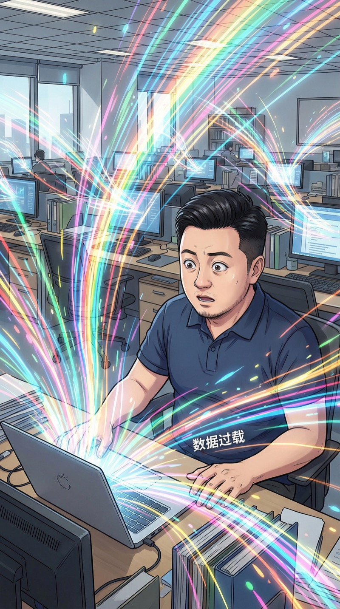
然后我犯了一个错误——在十几台电脑同时在线的环境里打开了"数据之眼"。信息量瞬间爆炸。
就像你在一个100万QPS的系统里开了debug级别的日志——整个人当场卡死了。
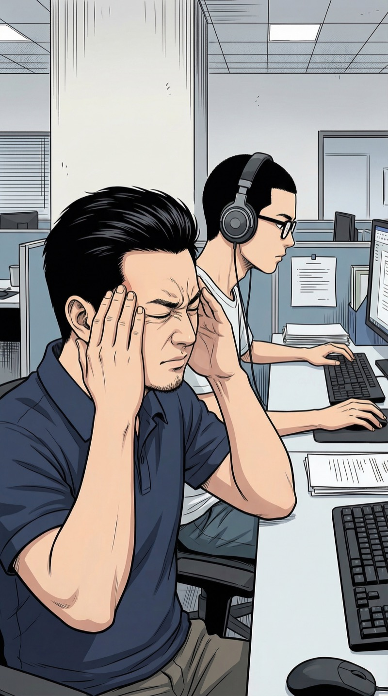
头疼欲裂。我摸索着学会了"关掉"这个能力——就像给眼睛装了个iptables，把不需要的数据包全DROP掉。三分钟后，世界安静了。
小鱼全程没摘耳机。这孩子，核弹在旁边炸了他也能继续写代码。
⚡ 决策点 #2：能看到同事私人聊天记录，怎么办？
A. 无所谓，都是自己人
→ B. 建立规则——只在必要时开启，不主动窥探隐私
C. 先把所有人扫一遍，排查内鬼
菩萨心肠：自律+尊重。没有怀疑对象之前，不动用这种权力。但如果公司存亡攸关——那另说。
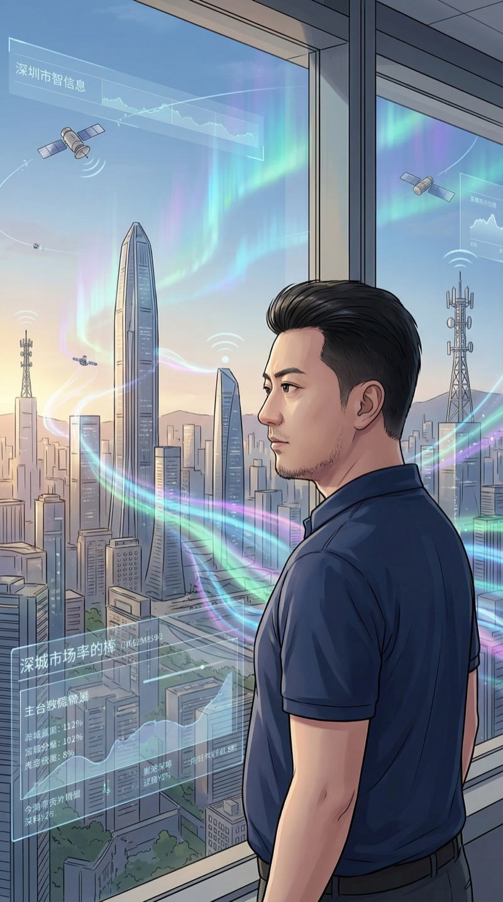
深圳，中国的硅谷。站在窗边往外看——所有的基站、所有的光纤、所有的卫星信号……这座城市每一秒都在产生PB级的数据。而现在，我能看见这些数据的形状。
这种感觉……就像一个一直在终端里写命令的人，突然看到了整个网络的拓扑图。爽，但也怕。
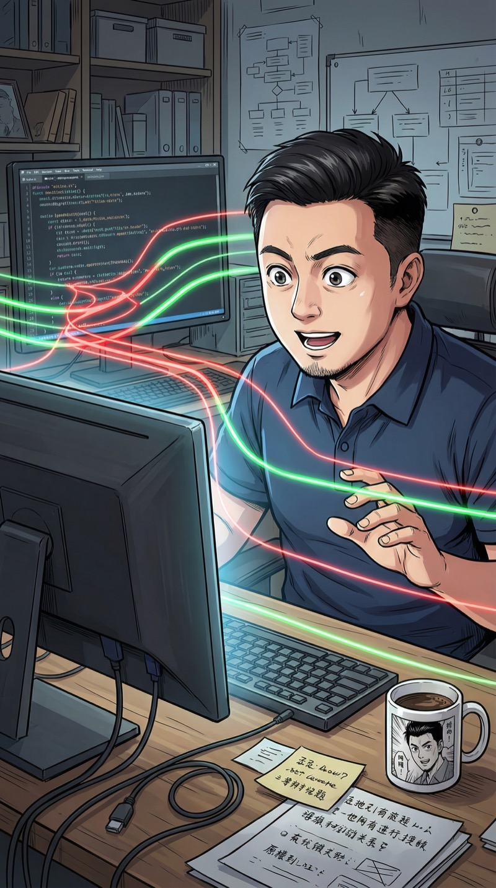
我重新打开那个卡了两个月的推荐算法。这一次，不一样了。
我能看见数据在模型里的流动。那个该死的瓶颈——在第三层attention的head 7上，有一组特征被死权重锁住了。就像高速公路上有个收费站只开了一个窗口。
两个月！两个月我没找到的bug，现在一眼就看见了。
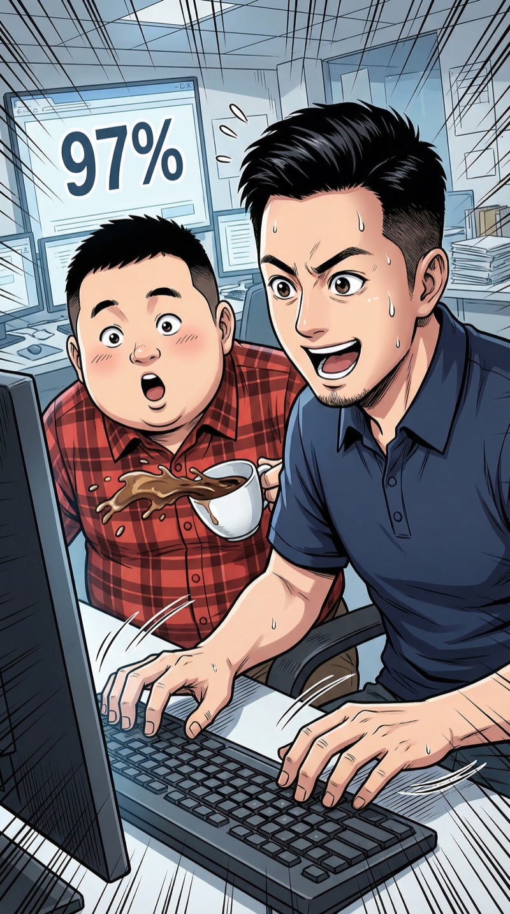
十五分钟，改了三行代码。accuracy从82%跳到97%。
老赵端着咖啡路过，看了一眼屏幕，咖啡洒了半杯在他的格子衫上。"你……你怎么做到的？！"
我想了想说："住院的时候想通了。"
这大概是我人生中说得最轻描淡写的一句话。
▎ 当天夜晚 · 异常信号
那天晚上加班的时候，我无意中打开了数据之眼。然后我看到了一件让我脊背发凉的事——
我们的核心服务器，正在向一个陌生的IP地址，持续传输数据。速率很慢，每秒只有几KB，像是刻意控制在不被监控系统发现的阈值以下。
这是一个教科书级的数据窃取操作。
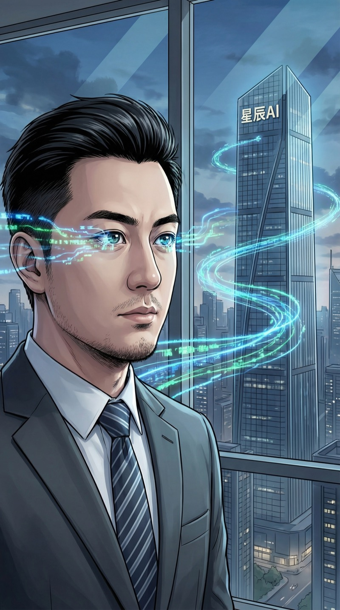
我顺着数据流追溯源头。这条数据管道穿过三层代理，最终汇入南山区另一栋大楼——星辰AI，估值80亿的AI独角兽。
他们的CEO陈明远，去年还跟我们谈过收购。当时他笑着说"以后我们是朋友"。
我信了。
⚡ 决策点 #3：发现数据被窃取，怎么办？
A. 立刻报警
→ B. 先收集证据，用技术手段反制
C. 直接找陈总对质
菩萨心肠霹雳手段——不冲动，设陷阱，一击致命。黑客守则第一条：在没完全理解系统之前，不要动手。
我没有立刻行动。黑客守则第一条：在你没有完全理解系统之前，不要动手。
我需要知道：他们偷了什么，偷了多久，谁是内应。对，一定有内应——这种精准的低速率传输，需要有人从内部部署agent。
也就是说，我们这12个人里……有一个叛徒。
这场仗，不只是商业竞争了。他们偷的不是数据，是我和兄弟们两年半的心血。是老赵抵押了房子投进来的启动资金。是小鱼放弃大厂offer来写的每一行代码。
菩萨心肠？对自己人我有。
但对偷我家东西的人——
▎ 第二天 · 猎人与猎物
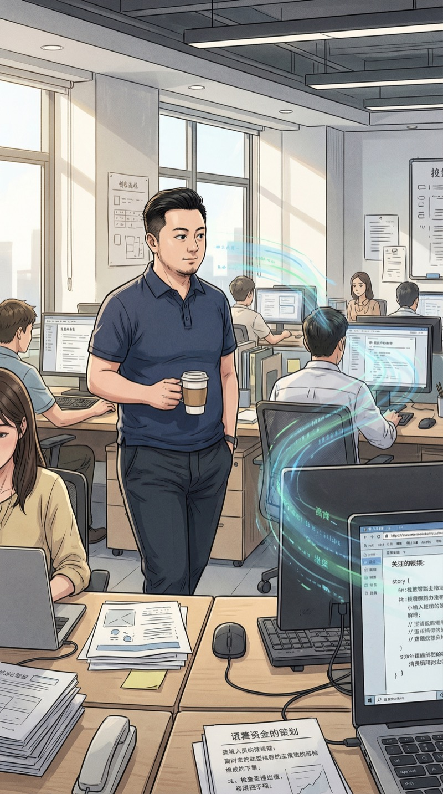
第二天，我像往常一样九点到公司。跟老赵开了晨会，给小鱼review了一段代码，中午和大家一起吃了外卖。一切正常。
只有我知道，我的眼睛一直开着。12个人，12台电脑，我在等一个异常信号。
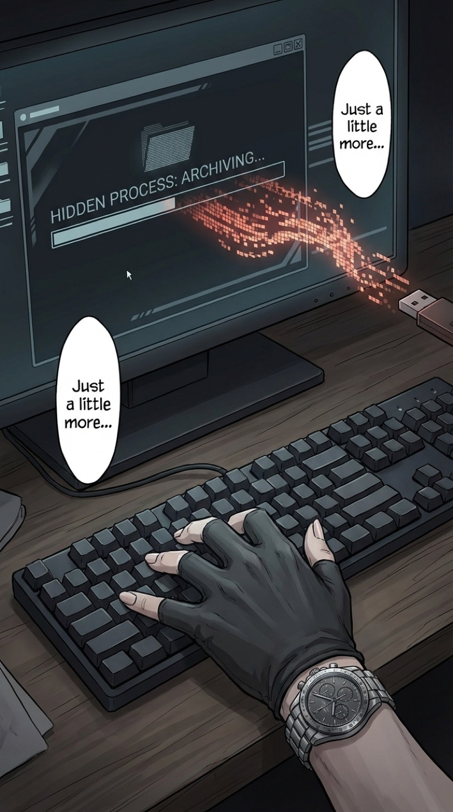
下午三点十七分。我端着咖啡经过的时候，看见了。
一个隐藏在systemd里的后台进程，正在把我们最核心的模型权重文件打包加密。那台电脑的使用者……
我低头看到了一只手。指甲修剪得很干净。手腕上戴着一块手表——
去年公司周年庆，我亲手送的。
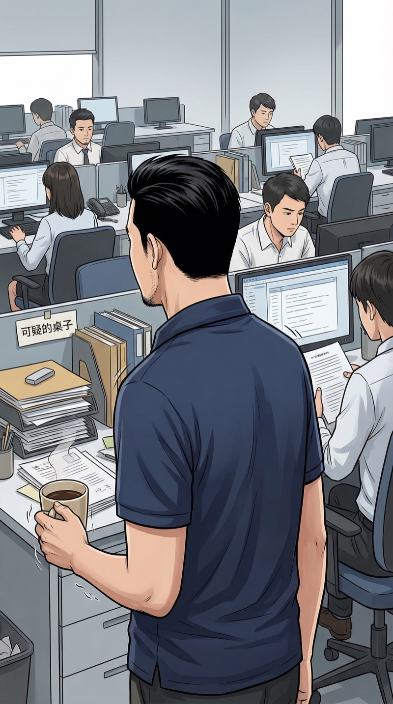
我的手在抖。不是因为愤怒，是因为那块手表。那是我花了半个月工资买的，十二块一样的，发给团队每个人的。
我深吸一口气，让自己的脸保持平静，走回了工位。
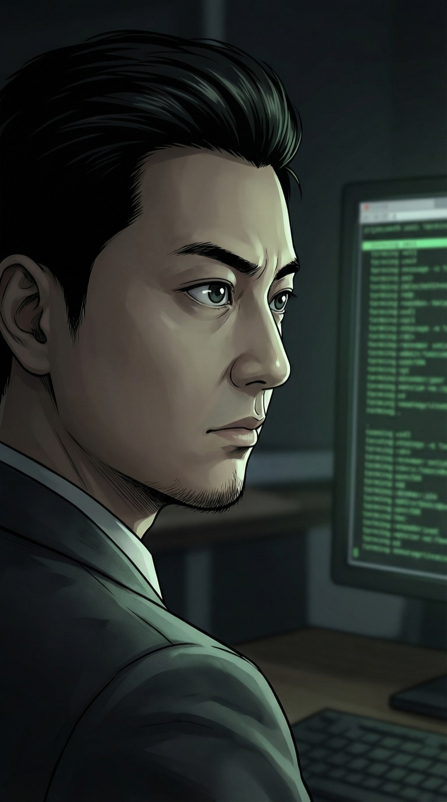
坐回工位后，我打开了一个新的终端。
不是写算法——是写一个陷阱。你觉得你偷得很隐蔽？好。那我就在你必经的数据管道上，放一颗只有你会踩到的地雷。
黑客守则第二条：最好的反击，是让对方以为自己还没被发现。
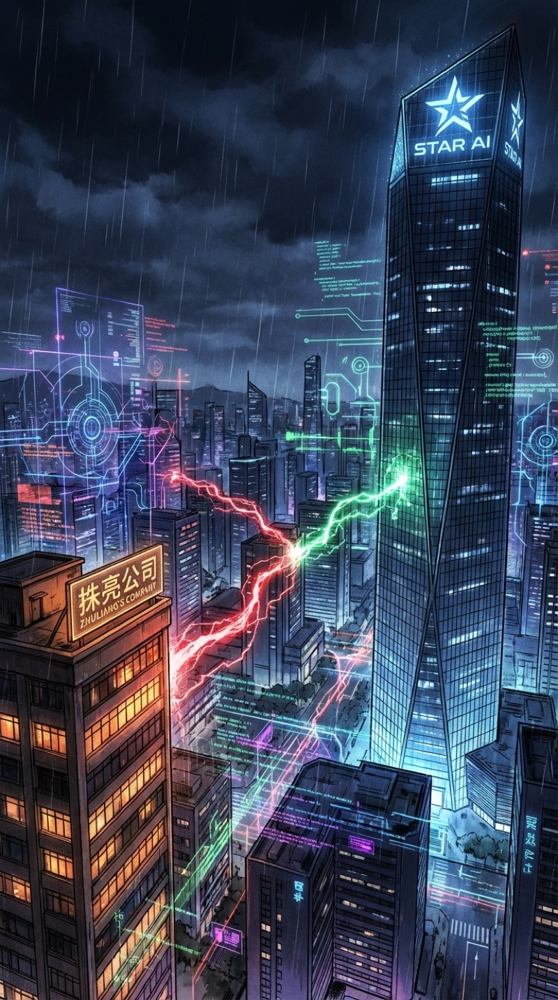
深圳的夜晚，永远有人加班。
今晚，星辰AI在加班偷数据。
而我在加班——设陷阱。
这场游戏，才刚刚开始。
悬念预告
手表的主人是谁？
数据陷阱何时触发？
数据之眼还有什么未知的可能？
▸ 第二章 · 即将揭晓